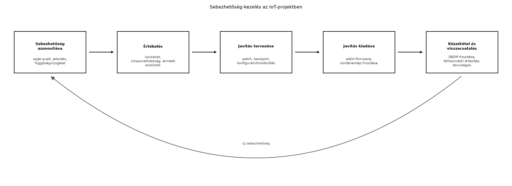

Egy IoT-rendszer nem attól válik biztonságossá, hogy egyetlen rétegébe beépítünk egy titkosítást vagy egy tűzfalat. A támadó a leggyengébb láncszemet keresi, és az IoT-ban ez gyakran egy egyszerű, a fejlesztés során bagatellnek tűnő hiba: az alapértelmezett jelszó, a frissítés nélkül hagyott firmware, a nyílt debug-port vagy a titkosítatlan telemetria. A TerraSense rendszerben az üvegházban elhelyezett ts-node egyszerű, olcsó eszköz, amely akár hálózati támadási felület is lehet, ha nem vesszük komolyan a sebezhetőségeket. Az előző alfejezetben felépítettük a fenyegetésmodellt; most a leggyakoribb hibákat és az azokra adott szabályozási válaszokat tekintjük át, hogy a későbbi fejezetekben (OTA-frissítés, flottakezelés, CI/CD) konkrét követelményeket tudjunk teljesíteni. A cél nem a jogi megfelelés önmagáért, hanem a gyakorlatban is működő védelmi intézkedések megalapozása.
Definíció (IoT-sebezhetőség). IoT-sebezhetőség alatt egy olyan hiányosságot értünk a rendszer hardver-, firmware-, szoftver-, konfigurációs vagy üzemeltetési rétegében, amely lehetővé teszi egy támadó számára, hogy a rendszer bizalmasságát, sértetlenségét vagy rendelkezésre állását megsértse, illetve az eszközt további támadásokhoz használja fel.
Definíció (SBOM). Az SBOM (Software Bill of Materials, szoftver-összetevőjegyzék) egy gépileg olvasható lista, amely egy szoftvertermékben található összes komponenst, függőséget, verziót és azok ismert sebezhetőségét tartalmazza; az IoT-ban ez kiterjed a firmware-re, a beágyazott operációs rendszerre és a konténerekre is.
Az OWASP (Open Worldwide Application Security Project) rendszeresen közzéteszi az IoT-rendszerek leggyakoribb biztonsági hiányosságait. A lista pontos verziója és sorrendje ellenőrizendő, de a tipikus kategóriák a következők (a TerraSense-re vetítve):
lab / lab
hitelesítés, vagy a fejlesztői konzol nyitva hagyása.A lista nem hierarchikus, és egy adott rendszerre több elem is egyszerre teljesülhet; a TerraSense-ben például az első, a hetedik és a nyolcadik a legvalószínűbb hiányosság a kezdeti laborokban.
A Mirai botnet 2016-ban vált hírhedtté, amikor nagy forgalmú
DDoS-támadásokat indítottak vele, például a Dyn DNS-szolgáltató ellen,
ami komoly internetes kieséseket okozott. A támadás alapja meglepően
egyszerű volt: a Mirai kártevő előre definiált listából próbált ki gyári
felhasználóneveket és jelszavakat (mint admin/admin,
root/12345) a nyilvános internetre csatlakoztatott
IoT-eszközökön – IP-kamerákon, otthoni routereken, DVR-eken. A fertőzés
után az eszközök egy botnet részévé váltak, és parancsra forgalmat
generáltak. A támadó nem bonyolult exploitot használt, hanem az eszközök
gyenge jelszavait és a felhasználók közömbösségét. A tanulság: az
IoT-ban a legegyszerűbb hiba is tömeges visszaélést tesz lehetővé, és a
gyártó felelőssége, hogy az alapértelmezett beállítások biztonságosak
legyenek, ne a felhasználóé.
Az ETSI (European Telecommunications Standards Institute) 2020-ban tette közzé az EN 303 645 szabványt, amely a fogyasztói IoT-eszközök kiberbiztonsági alapkövetelményeit határozza meg. A szabvány 13 rendelkezést tartalmaz, amelyek közül a TerraSense szempontjából a legfontosabbak:
A szabvány nem egyenlő a jogszabállyal, de a CRA (lásd alább) hivatkozik rá, és számos gyártó ezt használja önkéntes megfelelőségi alapként.
Az EU Cyber Resilience Act (CRA) egy rendelet, amely a digitális elemeket tartalmazó termékekre – így az IoT-eszközökre és szoftverekre – kötelező kiberbiztonsági követelményeket ír elő. A rendelet célja, hogy a termékek teljes életciklusa során (tervezés, fejlesztés, forgalomba hozatal, üzemeltetés) biztosítsa a biztonságot. A CRA főbb kötelezettségei:
Fontos: a CRA pontos határidői, átmeneti időszakai és a konkrét harmonizált szabványok folyamatosan alakulnak; a fejezet írásakor a rendelet hatálybalépését és alkalmazását mindig az aktuális jogi szöveg alapján kell ellenőrizni. A TerraSense tanulási projektje nem forgalomba hozott termék, de a gyakorlatban hasznos, ha a laborok során a CRA szellemében járunk el.
A sebezhetőség-kezelés egy folyamatos ciklus, amelyet az alábbi ábra szemléltet:

A folyamat kulcseleme az SBOM. A TerraSense esetében az SBOM tartalmazza a Zephyr verzióját, a Paho MQTT kliens verzióját, a Spring Boot és a Java függőségeit, a Mosquitto verzióját, valamint a konténeralapokat. Ha egy függőségben ismert sebezhetőség jelenik meg (például egy CVE az OpenSSL-ben), az SBOM alapján gyorsan meghatározható, melyik komponenst kell frissíteni. A közzétételi politika (vulnerability disclosure policy) meghatározza, hogy a fejlesztőcsapat hogyan fogadja és kezeli a külső bejelentéseket, milyen határidővel ad ki javítást, és hogyan tájékoztatja a felhasználókat anélkül, hogy a sebezhetőséget idő előtt nyilvánosságra hozná.
A szabályozási követelmények és a gyakorlati megvalósítás közötti választás nem mindig egyértelmű. Az alábbi táblázat a TerraSense-ben felmerülő dilemmákat foglalja össze:
| Kérdés | Lehetőség | Előny | Hátrány | TerraSense döntés |
|---|---|---|---|---|
| Hogyan hitelesítsük az eszközt? | Egyedi jelszó | Egyszerű | Gyenge, lopható | Tilos (ETSI 5.1-1); helyette X.509 tanúsítvány |
| Milyen frissítési stratégia? | Nincs frissítés | Nulla fejlesztési költség | Kihasználható sebezhetőségek, CRA-megszegés | A/B kép frissítés rollbackkel (OTA-frissítés: A/B képek, rollback, delta, fokozatos kiadás) |
| Hol legyen a titkosítás? | Csak a felhőben | Kevesebb erőforrás az eszközön | Lehallgatható telemetria a LAN-on | TLS/mTLS az MQTT-hez (Biztonságos kapcsolat: TLS 1.3, mTLS és DTLS az MQTT/CoAP alatt) |
| SBOM készítése manuálisan vagy automatizáltan? | Manuális | Kevesebb bevezetési munka | Elavul, hiányos | Automatikus generálás a CI/CD-ben (CI/CD a firmware-től a backendig) |
| Mennyi ideig támogassuk a frissítéseket? | Csak a garancia ideje alatt | Olcsóbb | CRA szerint a termék élettartama alatt kötelező | A TerraSense projektnél a kurzus ideje alatt, de ipari projektben legalább 5–10 év |
A lényeg: a szabályozás gyakran minimális, de egyértelmű elvárásokat fogalmaz meg, amelyeket nem lehet figyelmen kívül hagyni.
Továbbvitt eredmény. Az itt elkészített követelmény-megfeleltetési táblázatot használja a(z) Biztonságos boot és firmware-aláírás, a(z) OTA-frissítés: A/B képek, rollback, delta, fokozatos kiadás, a(z) Flottakezelés: nyilvántartás, konfiguráció, állapot és a(z) CI/CD a firmware-től a backendig alfejezet, amelyekben az itt jelzett hiányosságokra konkrét megoldásokat építünk.
Tekintsük a TerraSense jelenlegi, a korai laborokból származó állapotát, és végezzük el a megfeleltetést a legfontosabb ETSI-rendelkezésekre. A táblázatban a “Jelenlegi állapot” a fejlesztés során tipikus, célzottan be nem biztosított állapotot tükrözi; a “Teendő” oszlop a későbbi fejezetekben megvalósítandó feladatokat jelöli.
| ETSI rendelkezés | TerraSense komponens | Jelenlegi állapot (tipikus hiba) | Teendő |
|---|---|---|---|
| 5.1-1 (egyedi jelszó) | ts-node, ts-gw, broker | A laborokban lab / lab jelszó, eszközön
nincs is hitelesítő |
Egyedi kulcspár, X.509 tanúsítvány, Mosquitto-n client ID ellenőrzés (Eszközidentitás: X.509-tanúsítványok, PKI és kulcstárolás, Biztonságos kapcsolat: TLS 1.3, mTLS és DTLS az MQTT/CoAP alatt) |
| 5.3-13 (frissítés) | ts-node firmware | Nincs OTA, a firmware csak kézzel, debuggerrel frissíthető | A/B partíció, aláírt kép, rollback, jelölt frissítési állapot (Biztonságos boot és firmware-aláírás, OTA-frissítés: A/B képek, rollback, delta, fokozatos kiadás) |
| 5.5-1 (titkosított kommunikáció) | MQTT telemetria, parancsok | 1883-as porton TLS nélkül, a gateway és a broker között is | mTLS a gateway és a broker között, TLS a backendhez (Biztonságos kapcsolat: TLS 1.3, mTLS és DTLS az MQTT/CoAP alatt) |
| 5.6-1 (adatvédelem) | Backend, telemetria | Minden adat tárolása korlátlanul, nincs hozzáférési szabályzat | Adatmegőrzési politika, szerepkör-alapú hozzáférés, minimális adatgyűjtés (Megőrzés, ritkítás és tárolási költség) |
| 5.9-1 (támadási felület) | ts-node | Debug UART nyitva, felesleges shell parancsok | Debug-port letiltása éles buildben, minimális szolgáltatáskészlet (Eszközszoftver-architektúra: rétegek és állapotgépek, Biztonságos boot és firmware-aláírás) |
| 5.11-1 (ellenálló képesség) | ts-node | Nincs watchdog, hibanaplózás | Watchdog, állapotgép alapú újraindulás, biztonságos hibakezelés (Hibatűrés: watchdog, újraindulás, hibanaplózás) |
| 5.12-1 (telemetriai adatok gyűjtése) | Backend | Nincs naplózás a biztonsági eseményekről | Audit log, riasztás a rendellenes csatlakozásokra (Megfigyelhetőség végponttól végpontig: metrikák, naplók, nyomkövetés) |
Ez a táblázat nem csak ellenőrzőlista, hanem a fejlesztési backlog alapja is. A következő fejezetekben ezeket a sorokat dolgozzuk ki.
A megfeleltetés után a gyakorlatban ellenőrizni kell, hogy a bevezetett intézkedések valóban működnek. A TerraSense-ben a következőket tesszük:
nmap-mel vagy
ss -lntp-vel megvizsgáljuk, hogy a broker csak a 8883-as
(TLS) porton figyel-e, a 1883-as ne legyen nyitva.lab / lab jelszóval; a kapcsolatnak
el kell utasítódnia.signed.bin fájl tartalmazza-e az
aláírást, és a bootloader visszautasítja-e a módosított képet.sbom.json tartalmazza-e az összes
függőséget, és hogy a függőségvizsgáló eszköz (például
trivy vagy grype) nem talál-e kritikus
CVE-t.Tipikus hibatünetek:
| Hibatünet | Lehetséges ok | Javítás |
|---|---|---|
| A Mosquitto 1883-as porton is figyel | A Compose-fájlban mindkét port nyitva | Csak a 8883-at tegyük közzé, a 1883-at csak belső hálózaton hagyjuk |
| Az eszköz nem tud csatlakozni mTLS-sel | Hiányzik a CA-tanúsítvány az eszközről, vagy a tanúsítvány lejárt | Ellenőrizzük a tanúsítványláncot és az óra szinkronizációját (Idő az IoT-ban: időbélyeg, időszinkron, sorrend) |
| A firmware-frissítés után az eszköz nem indul | Az A/B partíció beállítása hibás, a bootloader nem találja a képet | Ellenőrizzük a partíciós táblát és a bootloader beállításait (Biztonságos boot és firmware-aláírás) |
| Az SBOM hiányos | A CI/CD-ben a függőségvizsgáló nem fut a konténerképekre | A Docker build lépésnél is futtassunk SBOM-generálást |
Azt hisszük, hogy a „gyári alapértelmezett jelszavak
tiltása” csak a felhasználói jelszavakra vonatkozik. Valójában
minden hitelesítő adatra vonatkozik, beleértve az adatbázis-, broker- és
API-kulcsokat is. A TerraSense-ben a ts-backend által
használt adatbázis-jelszót is egyedinek kell generálni, nem szabad a
docker-compose-ban fix értékkel kiadni.
A TLS bevezetésétől önmagában biztonságosnak tekintjük a rendszert. A TLS védi az adatátvitelt, de nem véd a hitelesítés hiányától (ha a szerver nem ellenőrzi a klienst, vagy ha a tanúsítványt nem érvényesítik). Pontosan ezt a félreértést kezeli az mTLS követelménye.
Az SBOM-ot egyenlőnek tekintjük a biztonsági audittal. Az SBOM csak egy lista; önmagában nem javít semmit. A tényleges sebezhetőség-kezeléshez folyamatos monitorozás és frissítés kell.
Melyik ETSI EN 303 645 rendelkezés tiltja az univerzális alapértelmezett jelszavakat, és hogyan teljesül ez a TerraSense-ben a tervezett megoldással?
A TerraSense backendjének jelenlegi telepítése egyetlen
docker-compose.yml-ben fix jelszavakat használ
(POSTGRES_PASSWORD: secret). Tervezd meg, hogyan lehetne
ezt úgy módosítani, hogy minden konténer egyedi, a hoszton titkosítottan
tárolt jelszót kapjon, anélkül hogy a jelszó a Git-repozitóriumba
kerülne. Milyen eszközt használnál?
Készíts egy ~/iot-labor/i054/etsi-mapping.md fájlt,
amelyben a fenti táblázatot kiegészíted egy “Felelős fejezet” oszloppal,
amely minden sorhoz hozzárendeli a megvalósítást tárgyaló későbbi
alfejezetet (Eszközidentitás: X.509-tanúsítványok,
PKI és kulcstárolás–CI/CD a firmware-től a
backendig). A táblázatot használd a záróprojektben (Záróprojekt: a teljes TerraSense rendszer összeállítása
és átvétele) ellenőrzőlistaként.
Egy teszt során a ts-node nem tud csatlakozni a
Mosquitto brokerhez mTLS-sel. A naplóban a hiba:
TLS error: certificate verify failed. Sorold fel a
lehetséges okokat, és add meg a hibakeresés lépéseit.
Az ETSI EN 303 645 5.1-1 rendelkezése tiltja az univerzális alapértelmezett jelszavakat. A TerraSense-ben az eszközök egyedi X.509 tanúsítványt kapnak a provisioning során, a broker pedig az eszköz tanúsítványa alapján azonosítja a klienst, így nincs közös jelszó. Ezt az Eszközidentitás: X.509-tanúsítványok, PKI és kulcstárolás és a Biztonságos kapcsolat: TLS 1.3, mTLS és DTLS alfejezetekben valósítjuk meg.
Használjunk Docker-secretet vagy a modernebb
docker compose titokkezelést (például a .env
fájlt kívül hagyva a Git-ből, és a jelszavakat a hoszton lévő
titkosított kulcstartóból, például HashiCorp Vaultból injektálva). A
docker compose támogatja a secrets szekciót,
amellyel a jelszó a hoszton lévő fájlból kerül a konténerbe anélkül,
hogy a repóban szerepelne. A fejlesztői gépen a .env.local
fájlt a .gitignore tartalmazza.
A feladat egy konkrét fájl létrehozása; a tartalom a fenti táblázat kiegészítése, például:
| ETSI rendelkezés | Felelős fejezet |
|---|---|
| 5.1-1 | i056, i057 |
| 5.3-13 | i058, i060 |
| 5.5-1 | i057 |
| 5.6-1 | i046 |
| 5.9-1 | i018, i058 |
| 5.11-1 | i019 |
| 5.12-1 | i062 |Ezt a fájlt a későbbi fejezetekben referenciaként használhatjuk, és a záróprojektben ellenőrizzük, hogy minden hiányosság megoldódott-e.
Lehetséges okok:
Hibakeresési lépések: ellenőrizzük a mosquitto naplóját;
openssl s_client -connect broker:8883 -CAfile ca.crt -cert client.crt -key client.key
paranccsal teszteljük a kézfogást; nézzük meg a tanúsítványok
érvényességét
(openssl x509 -in client.crt -noout -dates -subject); és
biztosítsuk az időszinkront (NTP).
A leggyakoribb IoT-sebezhetőségek – alapértelmezett jelszó, frissítés
hiánya, titkosítatlan kommunikáció – nem önálló hibák, hanem egymást
erősítő hiányosságok. Az ETSI EN 303 645 és az EU Cyber Resilience Act
minimális elvárásokat fogalmaz meg, amelyek a TerraSense-re is
érvényesek: egyedi eszközidentitás, biztonságos frissítés, titkosított
adatátvitel, minimális támadási felület és ellenálló képesség. Az SBOM
és a közzétételi politika a sebezhetőség-kezelés eszközei, nem célok. A
~/iot-labor/i054/etsi-mapping.md fájlban rögzítettük a
TerraSense hiányosságait és a megfelelő fejezeteket; ezt a továbbvitt
eredményt használja az OTA-frissítés, a Flottakezelés és a CI/CD
alfejezet. A szabályozás pontos határidői és az OWASP-lista verziója
ellenőrizendő.
A következő források kiindulópontok, de a fejezet írásakor nem kerültek részletes ellenőrzésre:
Ez a fejezet nem nyújt jogi tanácsadást; a szabályozási megfeleléshez a mindenkori hivatalos szövegeket kell figyelembe venni.